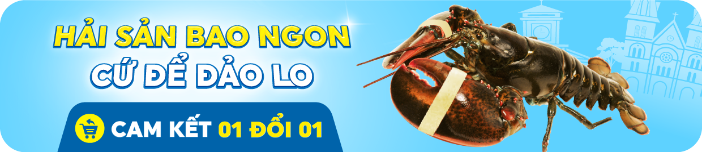

Món ngon: Hấp thái, nướng phô mai, sốt bơ tỏi, sốt trứng muối, sốt ớt Singapore, rang muối Hồng Kong...,
Tôm hùm Alaska có thể s.ống khỏe được từ 4-6 tiếng kể từ lúc giao hàng nên rất phù hợp mang đi xa
499,000đ675,000đ-26%
Mô Tả Sản Phẩm
So với các loại tôm hùm nội ngoại địa khác thì tôm hùm Alaska baby size nhỏ đang được Đảo Hải Sản nhập khẩu về, đây là dòng sản phẩm được ưa chuộng nhất hiện nay tại Tp Nam Dinh và các tỉnh lân cận. Nếu chúng ta so sánh giá trong tầm 2.000.000đ ngoài những sản phẩm tôm hùm Việt Nam ra thì khách hàng còn có sự lựa chọn tôm hùm alaska size 450gr - 520gr
Giới thiệu Tôm Hùm Alaska Nhỏ tại Hải sản Hoàng Gia
Những bãi đá ngầm, san hô, nước ở đáy trong xanh, rất lạnh là nơi sinh s.ống lý tưởng của tôm hùm Alaska. Tôm hùm Alaska được Đảo Hải Sản nhập theo đúng quy trình đảm bảo tôm hùm luôn s.ống khỏe.
Tôm hùm được nuôi giữ trong bể lớn với hệ thống sục khí đảm bảo tôm hùm luôn được cung cấp oxi. Đảm bảo tôm hùm Alaska khỏe mạnh chờ đến tay quý khách. Đảo Hải Sản cam kết tôm hùm Alaska được giao s.ống đến tận tay quý khách hàng trong vòng 2h sau khi đặt hàng.
Tôm hùm Alaska 500g có giá bao nhiêu?
Do nhu cầu sử dụng loại hải sản cao cấp này của khách hàng ngày càng tăng cao nên trên thị trường hiện nay có rất nhiều địa chỉ bán tôm hùm Alaska. Đồng thời tuỳ vào thời điểm, mùa vụ của tôm hùm Alaska size nhỏ nên giá của chúng sẽ khác nhau. Hiện tại giá đã được cập nhật trực tiếp trên sản phẩm bạn có thể thêm vào giỏ hàng ngay nhé!
Tôm hùm Alaska size nhỏ được bao nhiêu con 1kg?
Thường tôm hùm Alaska size nhỏ tại Đảo Hải Sản chúng tôi sẽ chọn những tôm hùm alaska có size 500g 1 con tương đương với 2 con cho 1kg. Size này chúng tôi thấy phù hợp với gia đình 2 - 3 người dùng.
Giá trị dinh dưỡng
Tôm hùm Alaska được quy định đánh bắt đúng kích thước, trọng lương nên tôm ở đây phát triển to. Đến lúc đánh bắt thì tôm đã trưởng thành nên thịt tôm săn chắc, giòn ngọt theo từng khối và rất thơm ngon. Thịt tôm Hùm Alaska nổi tiếng giàu dinh dưỡng, canxi thích hợp với người già, trẻ em hay người cần bổ sung chất dinh dưỡng.
Món ngon làm từ tôm hùm Alaska nhỏ
Có thể chế biến nhiều món ngon như: Hấp bia, nướng bơ tỏi, sốt bơ tỏi, lẩu, cháo tôm, gỏi tôm hoặc làm sashimi cũng rất tuyệt vời!

Hình ảnh khách hàng yêu quý của Hải Sản Hoàng Gia gửi Feedback